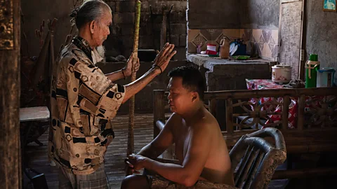
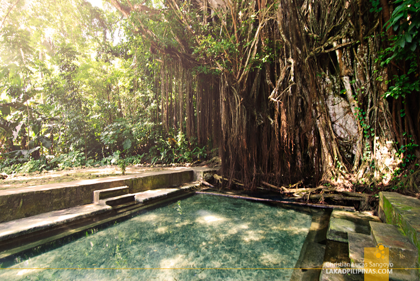
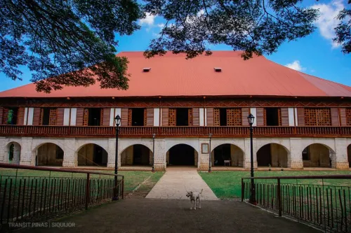

An island steeped in mystery, faith, and natural heritage
Siquijor, known historically as "Isla del Fuego" (Island of Fire) by Spanish colonizers — referring to the bioluminescent glow seen from the sea — has long carried an air of mystery. The island gained its reputation for folk healing and herbal medicine, practices that continue to this day. Salagdoong Beach, nestled within a man-made molave forest in the municipality of Maria, reflects the island's tradition of caring for its natural environment. The forest was planted generations ago as both a source of timber and a buffer against coastal erosion.
Siquijor's rich cultural heritage sets it apart from other Philippine islands



Take home a piece of Siquijor's culture